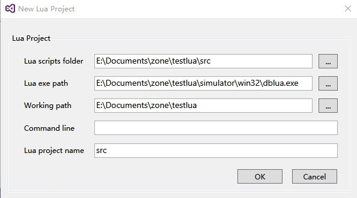
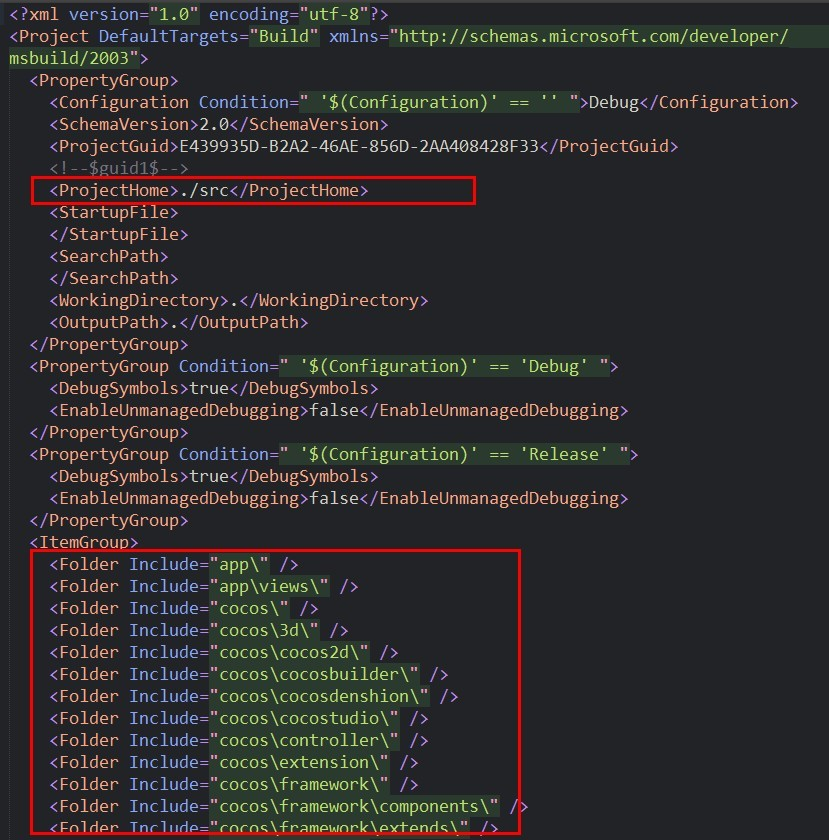
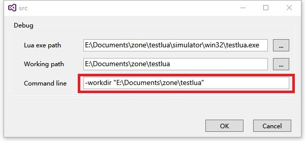

本文记录在 Windows 下搭建 cocos2dx lua 开发环境，还有调试设置。
系统：Windows 10 64
IDE：Mircrosoft Visual Studio 2015 update 3
Cocos2dx：cocos2d-x-3.13.1
VS插件：BabeLua3.2.2.0
准备工作
下载 cocos2dx 源码，并运行 setup.py 脚本，该脚本为 python 脚本，所以系统还要先安装 python，最好是 2.7 版本的。
创建 cocos2dx lua 项目
到需要创建项目的目录下运行以下命令
1 | cocos new testlua -p com.testlua -l lua |
下载安装 VS 插件 BabeLua
https://babelua.codeplex.com/releases 主站下载（国外站点，可下载最新源码） http://pan.baidu.com/s/1sjmC169 国内镜像（速度较快） 这里使用的是 BabeLua3.2.2.0 版本，下载完成后双击运行 vs 进行安装。
生成 simulator
打开项目目录下 frameworks\runtime-src\proj.win32\dblua.sln 文件。 点击运行按钮，或者按 F5 键开始编译并运行项目。 等待编译完成之后，项目下 \simulator\win32\ 目录中就会生成 textlua.exe ，这个就是运行 lua 脚本的主程序，也就是 simulator。
配置 Lua 项目
创建 visual studio lua 项目
前面安装完 BabeLua 插件后，在 vs 的主菜单上会出现 Lua 菜单，点击菜单中的 New Lua Project，填写内容如下：

Lua script folder：lua 脚本目录
Lua exe path：lua 主程序目录，也就是之前的
simulator Working path：lua 运行环境目录
Lua project name：在 VS 解决方案中显示的项目名称
Command line：执行命令，
这个可以先不管 点击 OK 就会在解决方案中出现 src 项目，同时加载了 lua 文件夹中所有 lua 脚本。
接着将 src 项目设置为启动项目，在资源管理器右键 src项目 > 设置为启动项，这时按 F5 键应该就可以正常启动程序了。
如果启动后程序运行有异常，比如黑屏不显示图片什么的，不着急，继续往下看。
调试
这里需要注意的是 BabeLua 3.2.2.0 版本会有个路径 BUG ，在调试时使用的 Lua scripts folder 目录会使用配置好的上一级目录，在执行调试时，在终端输出中会显示一堆的 file not exist 信息，所以还要对配置进行调整。
回到项目根目录下，用文本编辑器打开 src.luaproj 文件，修改其中的：
1 | <ProjectHome>.<ProjectHome> 为 <ProjectHome>./src<ProjectHome> |
然后将所有的 “ src\ ” 替换为空字符串。接着删除第一个为空的目录，大致修改后内容如下：

注意红框部分就是要修改的内容。修改完保存，回到 VS 程序，会出现重现加载对话框，点击全部重新加载。
然后按 F5 键运行程序，这时终端输出里应该就不会出现 file not exist 提示了。
打个断点试试看吧。 不过这里还会有个坑，会发现 main.lua 打的断点可能会无效，其他脚本则有效果，所以还需要进一步修改。
查看终端输出会发现加载的 main.lua 为 testlua\simulator\win32\src\main.lua，也就是说程序默认从模拟器根目录下取资源。如果不想每次调试都要执行 生成解决方案（Ctrl + Shift + B）的话，还要指定下运行目录，这里就要用到cocos2dx 模拟器的 -workdir 参数。
右键 lua 项目 -> 属性，在 Command line 里面加入 -workdir，如下

路径填项目的根目录，让程序取项目根目录下的资源，保存，然后按 F5 运行，这时再调试应该就一切正常了，每次修改完 lua 脚本，也不用执行编译，直接 F5 即可看到最新改动的运行情况。
以上就是 cocos2dx lua 环境搭建和调试配置的全部内容，有什么问题，欢迎留言。
感谢阅读！
Tips
如果发现启动调试比较慢，可以尝试安装秒起补丁 http://forum.cocos.com/t/babelua-1-06-quick-vs2013-vs2015-5-21/36553
扩展阅读
BabeLua官方博客 http://blog.csdn.net/babestudio/article/details/27222141
BabeLua项目地址 https://babelua.codeplex.com/